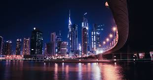

Dubái es una ciudad emirato de los Emiratos Árabes Unidos conocida por su lujoso comercio, la arquitectura ultramoderna y su vida nocturna animada. Burj Khalifa, una torre de 830 m de alto, domina el paisaje lleno de rascacielos. A sus pies se encuentra la Fuente de Dubái, con coreografías de chorros y luces al ritmo de la música. En las islas artificiales justo frente a la costa están Atlantis, la Palma, un centro turístico con agua y parques de animales marinos.
― Google
Superficie: 35 km²
Fundación: 9 de junio de 1833
Población: 3,331 millones (2019)
Fundador: Al Maktoum
Hora local: lunes, 00:45 |